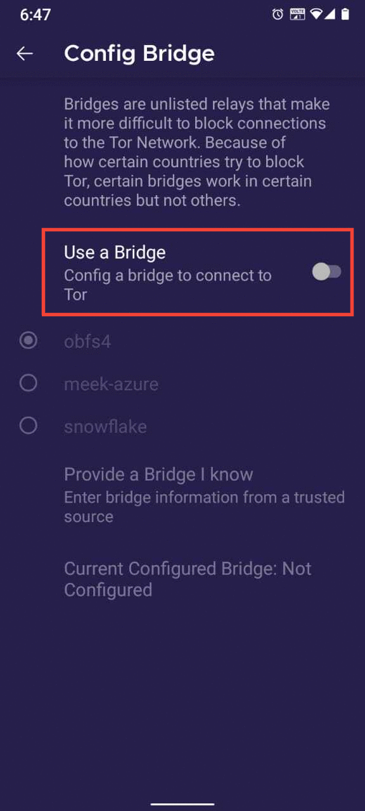
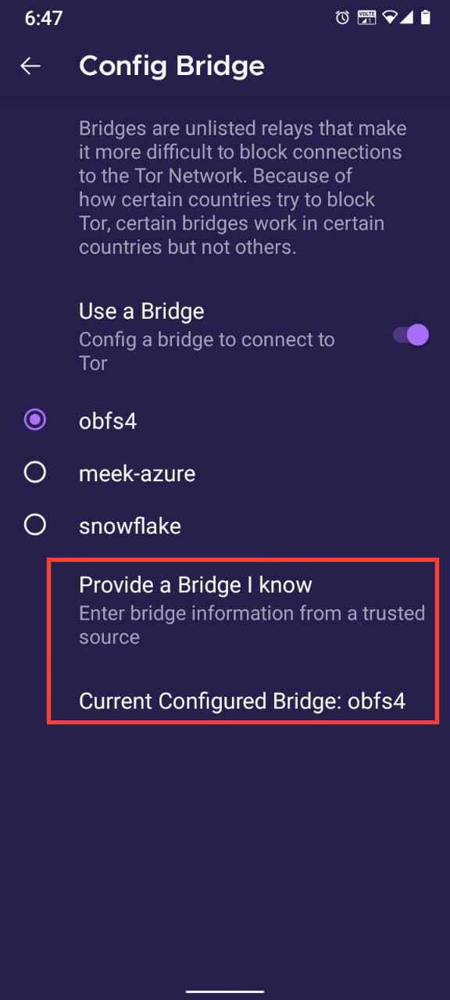
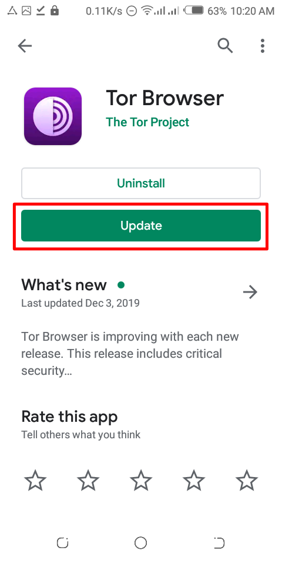
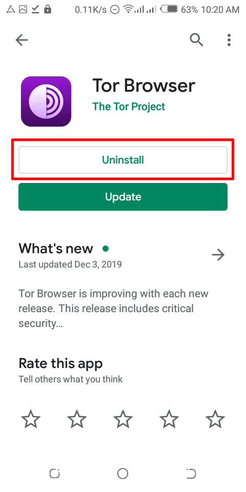
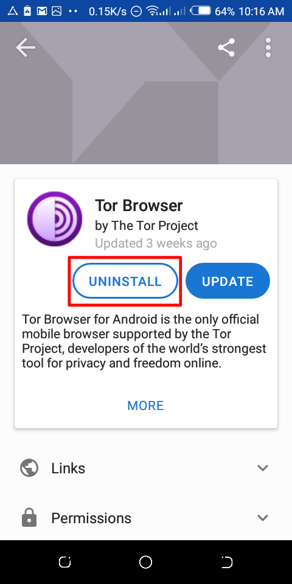

আন্ড্রয়েডের জন্য টর ব্রাউজার
Tor Browser for Android is the only official mobile browser supported and developed by the Tor Project.
It is like the desktop Tor Browser, but for your Android mobile device.
Some of the prime features of Tor Browser for Android include: reducing tracking across websites, defending against surveillance, resisting browser fingerprinting, and circumventing censorship.
DOWNLOADING AND INSTALLATION
There exists Tor Browser for Android and Tor Browser for Android (alpha).
Non-technical users should get Tor Browser for Android, as this is stable and less prone to errors.
Tor Browser for Android is available on Play Store, F-Droid and the Tor Project website.
It is very risky to download Tor Browser outside of these three platforms.
গুগল প্লে
You can install Tor Browser for Android from Google Play Store.
এফ-ড্রয়েড
The Guardian Project provides Tor Browser for Android on their F-Droid repository.
If you would prefer installing the app from F-Droid, please follow these steps:
Install the F-Droid app on your Android device from the F-Droid website.
After installing F-Droid, open the app.
At the lower-right-hand corner, open "Settings".
Under the "My Apps" section, open Repositories.
Toggle "Guardian Project Official Releases" as enabled.
Now F-Droid downloads the list of apps from the Guardian Project's repository (Note: this may take a few minutes).
Tap the Back button at the upper-left-hand corner.
Open "Latest" at the lower-left-hand corner.
Open the search screen by tapping the magnifying glass at the lower-right side.
Search for "Tor Browser for Android".
Open the query result by "The Tor Project" and install.
The Tor Project website
You can also get Tor Browser for Android by downloading and installing the apk from the Tor Project website.
RUNNING TOR BROWSER FOR ANDROID FOR THE FIRST TIME
When you run Tor Browser for the first time, you will see the option to connect directly to the Tor network, or to configure Tor Browser for your connection with the settings icon.
Connect

বেশিরভাগ ক্ষেত্রে, "Connect" নির্বাচন করা আপনাকে কোনও আর কনফিগারেশন ছাড়াই Tor network সাথে সংযোগ করার অনুমতি দেবে।
Once tapped, changing sentences will appear at the bottom of the screen, indicating Tor’s connection progress.
আপনি যদি তুলনামূলকভাবে দ্রুত সংযোগে থাকেন তবে এই বারটি একটি নির্দিষ্ট সময়ে আটকা পড়েছে বলে মনে হচ্ছে, সমস্যা সমাধানে সহায়তার জন্য Troubleshooting পৃষ্ঠাটি দেখুন।

If you know that your connection is censored, you should select the settings icon.
Tor Browser will take you through a series of configuration options.
The first screen will tell you about the status of the Tor Network and provide you the option to configure a Bridge ('Config Bridge').
If you know your connection is censored, or you have tried and failed to connect to the Tor network and no other solutions have worked, tap on 'Config Bridge'.
You will then be taken to the Circumvention screen to configure a pluggable transport.
CIRCUMVENTION
ব্রিজ relays হল টর relays যা সর্বজনীন টর নির্দেশিকায় তালিকাভুক্ত নয় ।
ব্রিজটি অত্যাচারী শাসকদের অধীনে থাকা ব্যবহারকারীদের জন্য উপকারী, এবং যারা নিরাপত্তার একটি অতিরিক্ত স্তর চান তাদের জন্য এই সেতুটি তারা জানতে পারবে যে তারা একটি সর্বজনীন টর রিলে IP ঠিকানার সাথে যোগাযোগ করছে ।
To use a pluggable transport, tap on the settings icon when starting Tor Browser for the first time.
The first screen tells you about the status of the Tor network. Tap on 'Config Bridge' to configure a bridge.

The next screen provides the option to either use a built-in bridge or custom bridge.
With the "Use a Bridge" option, you will have three options: "obfs4", "meek-azure", and "snowflake".


If you choose the "Provide a Bridge I know" option, then you have to enter a bridge address.


MANAGING IDENTITIES
নতুন পরিচয়

When Tor Browser is running, you would see so in your device's notification panel after expanding it along with the button "NEW IDENTITY".
Tapping on this button will provide you with a new identity.
Unlike in Tor Browser for Desktop, the "NEW IDENTITY" button in Tor Browser for Android does not prevent your subsequent browser activity from being linkable to what you were doing before.
Selecting it will only change your Tor circuit.
SECURITY SETTINGS

Security settings disable certain web features that can be used to compromise your security and anonymity.
Tor Browser for Android provides the same three security levels that are available on desktop.
You can modify the security level by following given steps:
- Tap on a button of 3 vertical dots in URL bar.
- Scroll down and tap on "Security Settings".
- You can now select an option i.e. Standard, Safer or Safest.
UPDATING
টর ব্রাউজার সব সময়ে আপডেট করা আবশ্যক। আপনি যদি সফ্টওয়্যারের একটি পুরোনো সংস্করণ ব্যবহার করা চালিয়ে যান, তাহলে আপনার গোপনীয়তা এবং গোপনীয়তার সাথে আপস করে এমন গুরুতর নিরাপত্তা ত্রুটিগুলির জন্য আপনি দুর্বল হতে পারেন।
You can update Tor Browser automatically or manually.
Updating Tor Browser for Android automatically
This method assumes that you have either Google Play or F-Droid installed on your mobile device.
Google Play

Tap on the hamburger menu next to the search bar and navigate to "My apps & games" > "Updates".
If you find Tor Browser on the list of apps which need updating, select it and tap the "Update" button.
F-Droid

Tap on "Settings", then go to "Manage installed apps".
On the next screen, select Tor Browser and finally tap on the "Update" button.
Updating Tor Browser for Android manually
Visit the Tor Project website and download a copy of the latest Tor Browser release, then install it as before.
In most cases, this latest version of Tor Browser will install over the older version, thereby upgrading the browser.
If doing this fails to update the browser, you may have to uninstall Tor Browser before reinstalling it.
With Tor Browser closed, remove it from your system by uninstalling it using your device's settings.
Depending on your mobile device's brand, navigate to Settings > Apps, then select Tor Browser and tap on the "Uninstall" button. Afterwards, download the latest Tor Browser release and install it.
UNINSTALLING
Tor Browser for Android can be uninstalled directly from F-Droid, Google Play or from your mobile device's app settings.
গুগল প্লে

Tap on the hamburger menu next to the search bar and navigate to "My apps & games" > "Installed".
Select Tor Browser from the list of installed apps, then press the "Uninstall" button.
এফ-ড্রয়েড

Tap on "Settings", then go to "Manage installed apps".
On the next screen, select Tor Browser and finally tap on the "Uninstall" button.
Mobile device app settings

Depending on your mobile device's brand, navigate to Settings > Apps, then select Tor Browser and tap on the "Uninstall" button.
সমস্যা সমাধান
View Tor Logs

To view your Tor logs:
- Launch Tor Browser for Android and tap 'Connect'.
- During the bootstrapping process, swipe right to left to view the logs. (Note: By default, the ability to take screenshots of the Tor logs is disabled on Tor Browser for Android. Bug #40191)
To troubleshoot some of the most common issues please refer to the Support Portal entry.
জ্ঞাত সমস্যা
At the moment, there are some features which are not available in Tor Browser for Android, but are currently available in Tor Browser for desktop.
- You can't see your Tor circuit. #25764
- Tor Browser for Android does not connect when moved to the SD Card. #31814
- You can't take screenshots while using Tor Browser for Android. #27987
- You can't upload files with Tor Browser for Android. #40283
- You can't open onion addresses that requires Client Authorization #31672
More about Tor on mobile devices
Orfox
Orfox was first released in 2015 by The Guardian Project, with the aim of giving Android users a way to browse the internet over Tor.
Over the next three years, Orfox continuously improved and became a popular way for people to browse the internet with more privacy than standard browsers, and Orfox was crucial for helping people circumvent censorship and access blocked sites and critical resources.
In 2019, Orfox was sunsetted after the official Tor Browser for Android was released.
Orbot
Orbot is a free proxy app that empowers other apps to use the Tor network.
Orbot uses Tor to encrypt your Internet traffic.
Then you can use it with other apps installed on your mobile device to circumvent censorship and protect against surveillance.
Orbot can be downloaded and installed from Google Play.
Check out our Support portal to know if you need both Tor Browser for Android and Orbot or either one.
Tor Browser for iOS
There is no Tor Browser for iOS.
আমরা একটি আইওএস অ্যাপ নামে একটি iOS অ্যাপের সুপারিশ করি, যা ওপেন সোর্স, টর সমন্বয়করণ ব্যবহার করে, এবং এমন একজনের দ্বারা বিকশিত হয় যারা টর প্রকল্পের সাথে ঘনিষ্ঠভাবে কাজ করে ।
তবে অ্যাপলের জন্য আইওএস-এর ব্রাউজার প্রয়োজন, যা Webkit নামে কিছু ব্যবহার করতে চায়, যা থেকে পেঁয়াজ ব্রাউজারকে একই গোপনীয়তা রক্ষা করে টর ব্রাউজার হিসেবে ।
Learn more about Onion Browser.
Download Onion Browser from the App Store.
Tor Browser for Windows Phone
There is currently no supported method for running Tor on older Windows Phones but in case of the newer Microsoft-branded/promoted phones, same steps on Tor Browser on Android can be followed.